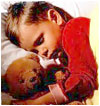

Сон - важный аспект жизнедеятельности человека. Здоровый сон - залог здоровья. Данное утверждение приобретает особую значимость, когда речь идет о детском растущем организме. Однако не менее важно обеспечить безопасность ребёнка во время сна. В статье августовского номера журнала Infectious diseases in children рассказывается о необходимых условиях здорового и безопасного сна ребёнка.
В 1992 году Американской академией педиатрии (AAP) были разработаны рекомендации, регламентирующие безопасное положение детей до 1 года во время сна. Их содержание сводилось к тезису: «положение лежа на спине является предпочтительным для сна у здоровых детей», а с 1994 года в США стартовала национальная кампания - «Сон на спине».
Необходимость подобных мер была обусловлена выявленной связью между положением ребёнка во сне на животе и повышенным риском развития синдрома внезапной смерти у детей.
Рекомендации основаны на исследованиях, проведенных в Новой Зеландии, Австралии и Великобритании, ряд из которых были специально посвящены вопросу, существует ли связь между сном в положении лежа на животе и увеличением риска развития синдрома внезапной смерти.
Ретроспективно были изучены истории болезни 260 детей в возрасте до 1 года, умерших от синдрома внезапной смерти в Чикаго за период с ноября 1993 г. по апрель 1996 г. Большинство из детей (75%) принадлежали к негроидной расе. Исследователи сравнили полученную информацию со сведениями об обычных детях того же возраста, расовой и этнической принадлежности и аналогичного веса при рождении (группа контроля).
Процент спящих на животе был аналогичным среди всех умерших от синдрома внезапной смерти младенцев - 58% среди представителей негроидной расы и 55% среди других расовых и этнических групп. В контрольной группе 43% чернокожих детей спали обычно на животе, по сравнению с 12% для остальных групп. Исследование показало, что младенцы, спавшие на животе, подвергались вдвое большему риску синдрома внезапной смерти, чем дети, спавшие в других положениях.
Кроме того, по данным Национального Института Здоровья США дети, спящие на спине, менее подвержены простудным заболеваниям, у них реже развивается острый средний отит.
С момента внедрения рекомендаций AAP в 1992 г. частота случаев синдрома внезапной смерти в США снизилась с 1,2 на 1000 (1992 г.) до 0,62 на 1000 (2000 г.), то есть почти в 2 раза.
Существует необходимость поддерживать практику укладывания детей на спину во время сна как персоналом медицинских учреждений, так и родителями, которые обязательно должны быть проинструктированы по данному вопросу. Дети не должны укладываться рядом с подушками, мягкими игрушками и т.п.; простыни должны быть заправлены под матрас.
Кроме этого, существуют и другие аспекты здорового сна.
Дети до 1 года обычно спят 16-20 ч в день, периодами по 30-120 минут, независимо от времени суток. Дети, находящиеся грудном вскармливании, спят в течение более коротких периодов времени и, соответственно, просыпаются чаще. По мнению врачей, это не должно являться поводом для беспокойства. Трех периодов сна по 45 мин. в день достаточно для ребёнка в течение 1 года жизни, к 18 месяцам дневной сон сводится к 1,5-2,5 часам в послеполуденное время.
Дети должны привыкать засыпать независимо от присутствия родителей. Вредной является широко распространенная привычка держать родителей за руку в момент погружения в сон. Проснувшись ночью, такой ребёнок засыпает с трудом. Родителям следует обратить на это внимание и приучать детей засыпать самостоятельно.
Сон в одной постели с родителями - другая распространенная практика в США. Исследования показали, что за период с 1993 по 2000 гг. процент детей, спящих с родителями повысился с 5,5% до 12,8%. Среди лиц негроидной расы подобная практика встречается в 4 раза чаще, а среди лиц азиатской - в 3 раза чаще по сравнению с белыми детьми. Последствия подобной практики недостаточно изучены. Её противники говорят об опасности подобного совместного сна в связи с потенциальным риском удушения детей постельным бельем или подушками.
Таким образом, подводя итог вышесказанному, здоровый и безопасный сон обеспечен ребёнку только в отдельной кроватке в положении лежа на спине.
Rask J.
Safe sleep for infants is on their backs.
Infectious diseases in children, 2003, Aug, р. 48-9